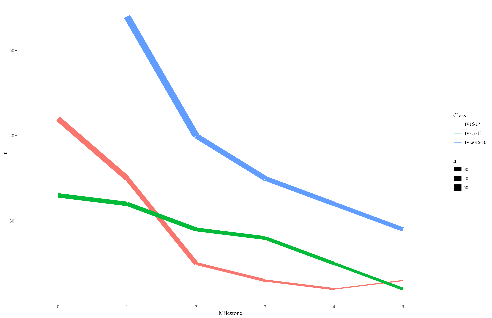

my $repo = Git->repository ( Directory => '.' );
my $diff = $repo->command('diff','HEAD^1','HEAD');
my $diff_regex = qr/a\/proyectos\/hito-(\d)\.md/;
my $github;
my ($this_hito) = ($diff =~ $diff_regex);
skip "No hay envío de proyecto", 5 unless defined $this_hito;
my @files = split(/diff --git/,$diff);
my ($diff_hito) = grep( /$diff_regex/, @files);
Is it a single line? ⃒
my @lines = split("\n",$diff_hito);
my @adds = grep(/^\+[^+]/,@lines);
is( $#adds, 0, "Añade sólo una línea");
my $url_repo;
if ( $adds[0] =~ /\(http/ ) {
($url_repo) = ($adds[0] =~ /\((http\S+)\)/);
} else {
($url_repo) = ($adds[0] =~ /^\+.+(http\S+)/s);
}
say $url_repo;
isnt($url_repo,"","El envío incluye un URL");
like($url_repo,qr/github.com/,"El URL es de GitHub");
Download student's repo
my ($user,$name) = ($url_repo=~ /github.com\/(\S+)\/(.+)/);
my $repo_dir = "/tmp/$user-$name";
if (!(-e $repo_dir) or !(-d $repo_dir) ) {
mkdir($repo_dir);
`git clone $url_repo $repo_dir`;
}
my $student_repo = Git->repository ( Directory => $repo_dir );
my @repo_files = $student_repo->command("ls-files");
my $status = get "http://$deployment_url/status";
isnt( $status, undef, "Despliegue correcto en $deployment_url/status" );
my $status_ref = from_json( $status );
like ( $status_ref->{'status'}, qr/[Oo][Kk]/, "Status de $deployment_url correcto");
my $pinger = Net::Ping->new();
$pinger->port_number(22); # Puerto ssh
isnt($pinger->ping($ip), 0, "$ip es alcanzable");
Saves
me a lot of time.
✓ Is it good for the students?

Use Git::Repo::Commits
for my $h ( @{$repos{$r}[1]} ) {
my ($milestone) = ($h =~ /(\d+)/);
my @files = ("$preffix/$h.md");
my $commits_obj = new Git::Repo::Commits "$home/$r", \@files;
my @committers = map( $_->{'author'}, @{$commits_obj->commits});
for my $d ( @committers ) {
my ($email) = ($d =~ /<([^>]+)>/);
$user_stats{"$email, $class, $milestone"}++;
}
}